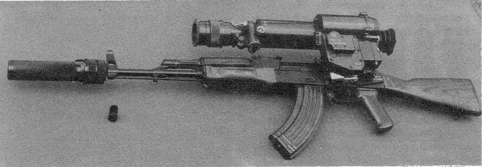

AK47

AK屬於突擊步槍，與第二次世界大戰時期的步槍相比，槍身短小、射程較短，適合較近距離的戰鬥。它採用參考自美國M1加蘭德半自動步槍的長行程氣動式自動原理，導氣管位於槍管上方，通過活塞推動槍機活動，轉拴式閉鎖槍機。
- AK發射7.62×39公釐中間型威力槍彈，由容量為30發子彈的弧形彈匣供彈，其保險／射擊選擇桿的設計則參考自美國雷明頓8型半自動步槍，設置在機匣右側，可以選擇半自動或者全自動的發射方式，槍機拉柄位於機匣右側，為槍機座的一部份。AK的槍機動作可靠，即使在連續射擊時有灰塵等異物進入槍內，它的機械結構仍能保證繼續正常運作，並可以在沙漠、熱帶雨林、嚴寒等極度惡劣的環境下保持相當好的效能，而且它的結構簡單，易於分解、清潔和維修，操作簡便。
AK主要缺點是由於全自動射擊時槍口上揚嚴重，槍機座後座時撞擊機匣底，其槍機退殼口的設計令其較難安裝皮卡汀尼導軌（不過隨著許多槍械零件生產商，乃至卡拉希尼柯夫集團已經設計出供AK系列專用的皮卡汀尼導軌機匣蓋，這個問題基本上已得到解決），機匣蓋的設計導致瞄準基線較短，瞄準具設計不理想等等缺陷，大大影響射擊精度，300公尺以外難以準確射擊，連發射擊精度更低，實際上它只可以滿足以遭遇戰為主的較近距離上戰鬥的要求。